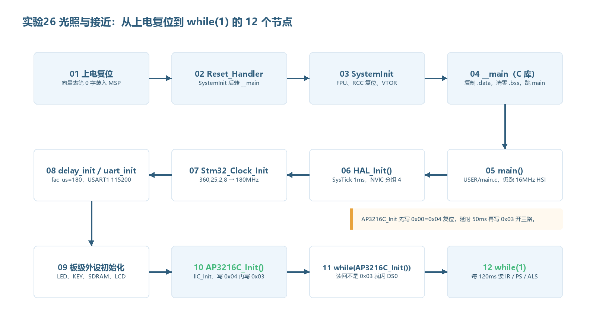
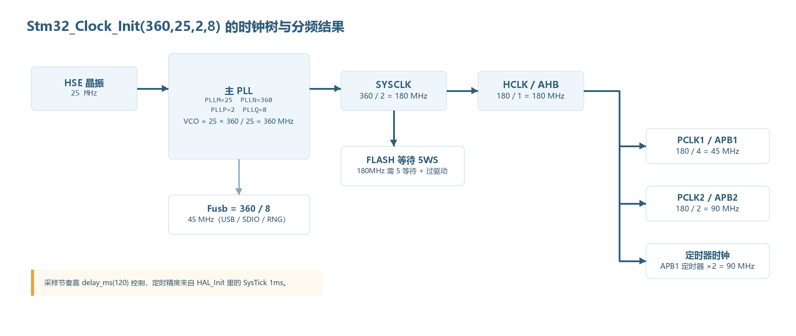
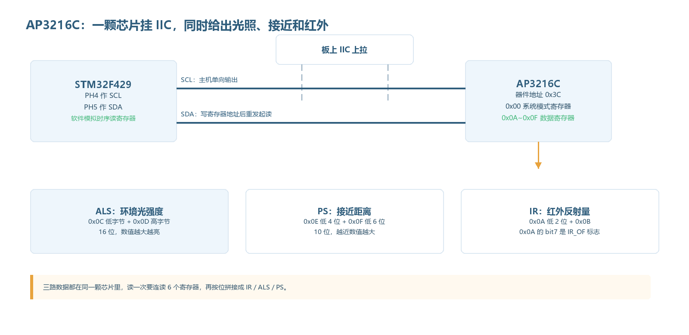
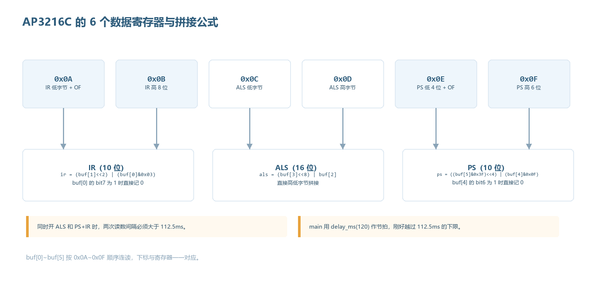
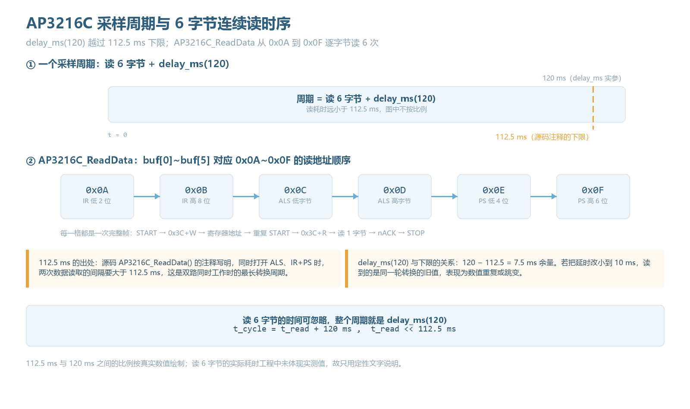

01 实验目标与硬件资源
实验26 依旧复用软件 IIC，从机换成 AP3216C 三合一传感器。它把红外 LED、光电二极管和环境光传感器封在一起，主机只要按寄存器读 6 个字节，就能拼出 IR、PS、ALS 三个 16 位以内的数值，并实时刷到 LCD 上。
| 功能 | 引脚 / 器件 | 工程中的初始化 |
|---|---|---|
| IIC 时钟线 | PH4，推挽输出 + 上拉 | IIC_Init() |
| IIC 数据线 | PH5，推挽输出 + 上拉 | IIC_Init() |
| 传感器 | AP3216C，地址 0x3C | AP3216C_Init() |
| 环境光 ALS | 寄存器 0x0C / 0x0D | AP3216C_ReadData() |
| 接近 PS | 寄存器 0x0E / 0x0F | AP3216C_ReadData() |
| 红外 IR | 寄存器 0x0A / 0x0B | AP3216C_ReadData() |
| LED0 | PB1，推挽输出 | 每 120ms 翻转一次 |
| 显示 | LCD（LTDC + 外部 SDRAM） | SDRAM_Init() + LCD_Init() |
0x3C、读地址是 0x3D；源码在 ap3216c.c 里用 AP3216C_ADDR|0x00 与 AP3216C_ADDR|0x01 得到，和 24C02 的写法完全一致。02 目录与文件分工
| 文件 | 职责 | 本实验关注点 |
|---|---|---|
USER/main.c | 初始化顺序与主循环 | 每 120ms 读一次并刷新 LCD |
USER/stm32f4xx_it.c | 异常与中断入口 | SysTick_Handler()、HardFault_Handler() |
USER/system_stm32f4xx.c | 复位后的最小配置 | FPU、RCC 复位、VTOR 重定位 |
CORE/startup_stm32f429xx.s | 向量表、栈堆、复位入口 | Stack 0x400、Heap 0x200、Reset_Handler |
SYSTEM/sys/sys.c | 时钟初始化 | Stm32_Clock_Init() 的 PLL 与 Flash 等待 |
SYSTEM/delay/delay.c | 微秒/毫秒延时 | IIC 位时序与 50ms 复位等待 |
SYSTEM/usart/usart.c | 串口与 printf | fputc() 重定向、PA9/PA10 配置 |
HARDWARE/IIC/myiic.c | 软件模拟 IIC 时序 | 与前两个实验完全一致 |
HARDWARE/AP3216C/ap3216c.c | 本实验核心 | 模式配置、6 字节连读、位拼接 |
HARDWARE/led|key|sdram|lcd | 板级外设 | 现象呈现：屏幕数值与 DS0 心跳 |
到这里，“myiic.c 负责电平、器件文件负责协议、main.c 负责业务”的三层结构已经完全稳定。三个实验共用同一份 IIC，只是换了两层之上的协议实现。
03 启动流程总览

初始化顺序与前面两个实验一致，区别在第 10、11 步：AP3216C_Init() 不只是探测地址，还要写两次模式寄存器、延时 50ms、再读回校验。main() 把它放在 while() 条件里，校验不通过就闪 DS0 反复重试。
- 第 10 步内部顺序固定：
IIC_Init()→ 写 0x00=0x04 → 延时 → 写 0x00=0x03 → 读回 0x00。 - 第 11 步的判据是“读回值等于 0x03”，而不是“有应答”，因为地址能应答不代表模式写成功。
- 只有校验通过才打印
AP3216C Ready!，LCD 才会显示 IR / PS / ALS 三个标签。 - 进入主循环后不再做任何配置，只是按固定节拍读 6 个寄存器。
04 启动文件与向量表
Stack_Size EQU 0x400; // 栈 1KB，主栈 MSP 从这里向下生长 Heap_Size EQU 0x200; // 堆 512B，本工程几乎不用 malloc __Vectors DCD __initial_sp ; Top of Stack DCD Reset_Handler ; Reset Handler DCD NMI_Handler ; NMI Handler DCD HardFault_Handler ; Hard Fault Handler ... Reset_Handler PROC EXPORT Reset_Handler [WEAK] IMPORT SystemInit IMPORT __main LDR R0, =SystemInit BLX R0 // 先跑 SystemInit LDR R0, =__main BX R0 // 再进 C 库，最终调用 main ENDP
- 复位时内核从地址 0 取两个字：第 0 个字装入 MSP，第 1 个字装入 PC。
- F429 的 Flash 起始地址是 0x08000000，上电时 0x00000000 别名到 Flash，读到就是本工程的向量表。
- 本实验只有
ir、ps、als三个 u16 全局变量与少量局部变量，1KB 栈足够。 - 工程没有启用 IIC 中断，所有收发都在主循环里轮询完成，因此向量表里没有额外的外设中断被用到。
05 SystemInit 与 HAL_Init
void SystemInit(void)
{
#if (__FPU_PRESENT == 1) && (__FPU_USED == 1)
SCB->CPACR |= ((3UL << 10*2)|(3UL << 11*2)); /* set CP10 and CP11 Full Access */
#endif
RCC->CR |= (uint32_t)0x00000001; // 先开内部 HSI，保证有饭吃
RCC->CFGR = 0x00000000; // 清空分频配置
RCC->CR &= (uint32_t)0xFEF6FFFF; // 关 HSEON / CSSON / PLLON
RCC->PLLCFGR = 0x24003010; // PLL 参数恢复复位值
SCB->VTOR = FLASH_BASE | VECT_TAB_OFFSET; // 向量表定位到 Flash 起始
}
SystemInit() 结束时主频仍是 HSI，真正切到 180MHz 由 Stm32_Clock_Init() 完成。HAL_Init() 建立 1ms SysTick 时基，delay_ms(120) 的节拍就来自这里。
delay_ms(50) 等待。这个延时同样依赖 delay_init() 的正确参数，否则 50ms 可能变成 5ms，读回校验就会失败。06 时钟、延时与串口

// SYSTEM/sys/sys.c RCC_OscInitStructure.PLL.PLLM = pllm; // 25，HSE 先分频 RCC_OscInitStructure.PLL.PLLN = plln; // 360，VCO = 25 / 25 × 360 = 360MHz RCC_OscInitStructure.PLL.PLLP = pllp; // 2，SYSCLK = 360 / 2 = 180MHz RCC_OscInitStructure.PLL.PLLQ = pllq; // 8，Fusb = 360 / 8 = 45MHz RCC_ClkInitStructure.AHBCLKDivider = RCC_SYSCLK_DIV1; // HCLK = 180MHz RCC_ClkInitStructure.APB1CLKDivider = RCC_HCLK_DIV4; // PCLK1 = 45MHz RCC_ClkInitStructure.APB2CLKDivider = RCC_HCLK_DIV2; // PCLK2 = 90MHz HAL_RCC_ClockConfig(&RCC_ClkInitStructure, FLASH_LATENCY_5);
// SYSTEM/delay/delay.c
void delay_init(u8 SYSCLK)
{
HAL_SYSTICK_CLKSourceConfig(SYSTICK_CLKSOURCE_HCLK); // SysTick 跟随 HCLK
fac_us = SYSCLK; // 180MHz → 每微秒 180 个节拍
}
void delay_us(u32 nus)
{
u32 ticks = nus * fac_us; // 需要等的节拍数
u32 told = SysTick->VAL; // SysTick 是递减计数器
while (1) { ... if (tcnt >= ticks) break; } // 差值累加到 ticks 就退出
}
void delay_ms(u16 nms)
{
u32 i;
for (i = 0; i < nms; i++) delay_us(1000); // 毫秒靠微秒循环拼
}
fac_us必须与 HCLK 一致，IIC 的delay_us(2)、delay_us(4)才准确。delay_ms(50)是 AP3216C 的复位等待，delay_ms(120)是采样节拍，两者都靠delay_us拼出来。- SysTick 由
HAL_Init()配成 1ms 中断，但delay_us不依赖该中断，是纯轮询。 - GPIOH 挂在 AHB1，读写 PH4 / PH5 没有额外分频开销，端口翻转速度远高于 IIC 需要的速率。
07 AP3216C 与寄存器地图

// HARDWARE/AP3216C/ap3216c.h #define AP3216C_ADDR 0X3C // 7 位地址 0x1E 左移一位 // HARDWARE/AP3216C/ap3216c.c void AP3216C_WriteOneByte(u8 reg, u8 data) { IIC_Start(); IIC_Send_Byte(AP3216C_ADDR|0X00); // 0x3C，写方向 IIC_Wait_Ack(); IIC_Send_Byte(reg); // 寄存器地址 IIC_Wait_Ack(); IIC_Send_Byte(data); // 写入的值 IIC_Wait_Ack(); IIC_Stop(); } u8 AP3216C_ReadOneByte(u8 reg) { u8 temp = 0; IIC_Start(); IIC_Send_Byte(AP3216C_ADDR|0X00); IIC_Wait_Ack(); IIC_Send_Byte(reg); // 先写要读哪个寄存器 IIC_Wait_Ack(); IIC_Start(); // 重新起始，切读方向 IIC_Send_Byte(AP3216C_ADDR|0X01); // 0x3D IIC_Wait_Ack(); temp = IIC_Read_Byte(0); IIC_Stop(); return temp; }
- AP3216C 是“寄存器型”器件：写操作要发 地址 + 寄存器 + 数据，读操作要发 地址 + 寄存器 + 重起始 + 读地址。
- 寄存器地址是单字节，读写指针不会自动回卷，所以连读 6 个字节时必须逐个指定地址。
- 0x00 是系统模式寄存器：写 0x04 触发软件复位，写 0x03 同时开启 ALS 与 PS+IR。
- 0x0A～0x0F 是数据寄存器，顺序固定为 IR 低/高、ALS 低/高、PS 低/高。
08 初始化：复位与模式
u8 AP3216C_Init(void)
{
u8 temp = 0;
IIC_Init(); // PH4 / PH5 就绪
AP3216C_WriteOneByte(0X00, 0X04); // 软件复位
delay_ms(50); // 等内部电路稳定
AP3216C_WriteOneByte(0X00, 0X03); // 开启 ALS + PS + IR
temp = AP3216C_ReadOneByte(0X00); // 读回模式寄存器
if (temp == 0X03) return 0; // 0 = 成功
else return 1; // 1 = 失败，main 里重试
}
- 复位后必须等 50ms，芯片内部 ADC 与红外驱动需要建立时间，等太短会读回 0x00 或 0xFF。
- 0x03 的含义是 bit0 开 ALS、bit1 开 PS+IR，两路同时工作，所以后面对时间隔必须大于 112.5ms。
- 校验读的是同一个寄存器，能同时验证“写通路”和“读通路”，比只探测地址严格得多。
- 返回值语义与
PCF8574_Init()一致：0 成功、1 失败，方便while()直接使用。
09 6 字节数据与拼接公式

void AP3216C_ReadData(u16 *ir, u16 *ps, u16 *als)
{
u8 buf[6];
u8 i;
for (i = 0; i < 6; i++)
buf[i] = AP3216C_ReadOneByte(0X0A + i); // 逐个读 0x0A~0x0F
if (buf[0] & 0X80) *ir = 0; // bit7 = IR_OF，溢出记 0
else *ir = ((u16)buf[1] << 2) | (buf[0] & 0X03);
*als = ((u16)buf[3] << 8) | buf[2]; // ALS 直接高低字节拼
if (buf[4] & 0X40) *ps = 0; // bit6 = PS_OF
else *ps = (((u16)buf[5] & 0X3F) << 4) | (buf[4] & 0X0F);
}
- IR 只有 10 位：低 2 位在 0x0A 的 bit0~1，高 8 位在 0x0B，所以要
(buf[1]<<2) | (buf[0]&0x03)。 buf[0]的 bit7 是 IR 溢出标志，buf[4]的 bit6 是 PS 溢出标志，溢出时源码直接把结果记 0。- ALS 是 16 位，
0x0C低字节、0x0D高字节，直接移位拼接。 - PS 只有 10 位：
0x0E的低 4 位是低位，0x0F的低 6 位是高位，掩码写错就会读出一个巨大的假值。
把采样周期与这 6 次读放在同一条时间轴上，能看清两件事：读 6 个字节只占 delay_ms(120) 开头极小的一段，其余时间都在等下一次转换完成。

112.5 ms 是源码注释给出的下限，delay_ms(120) 比它多出 7.5 ms 余量；6 次读按 0x0A → 0x0F 的顺序落进 buf[0]~buf[5]，上面的拼接公式才有固定的字节对应关系。
10 主循环与刷新逻辑
// USER/main.c while (AP3216C_Init()) // 校验失败就闪 DS0 重试 { LCD_ShowString(30,160,200,16,16,"AP3216C Check Failed!"); delay_ms(500); LCD_ShowString(30,160,200,16,16,"Please Check! "); delay_ms(500); LED0 = !LED0; } LCD_ShowString(30, 160, 200, 16, 16, "IR:"); LCD_ShowString(30, 180, 200, 16, 16, "PS:"); LCD_ShowString(30, 200, 200, 16, 16, "ALS:"); while (1) { AP3216C_ReadData(&ir, &ps, &als); // 一次读 6 个寄存器 LCD_ShowNum(30+32, 160, ir, 5, 16); // 5 位宽，右对齐显示 LCD_ShowNum(30+32, 180, ps, 5, 16); LCD_ShowNum(30+32, 200, als, 5, 16); LED0 = !LED0; // 每次采样翻转一次 delay_ms(120); // 大于 112.5ms 的下限 }
LCD_ShowNum()会先擦掉对应区域再写数字，所以数值从 3 位变 5 位不会留下残影。- 三个标签只写一次，主循环只刷新数值，减少 LCD 刷新开销。
LED0每 120ms 翻转，用肉眼就能判断程序有没有卡在 IIC 里。delay_ms(120)不只是“慢一点”，而是 AP3216C 在 ALS 与 PS 同时开启时的最小采样间隔要求。
11 交互演示：三路数值变化
AP3216C_ReadData() 拼出三个值、buf[0]&0x80 触发 IR_OF 记 0、主循环每 120ms 翻转 DS0。以上仅演示逻辑。12 操作与现象对照
| 操作 | 代码路径 | 现象 |
|---|---|---|
| 上电 / 复位 | AP3216C_Init() | 屏幕显示 AP3216C TEST，校验通过后出现 AP3216C Ready! |
| 传感器未接 | while(AP3216C_Init()) | DS0 约 1 秒闪一次，屏幕交替显示 Check Failed 与 Please Check |
| 遮住传感器 | ALS 数值变化 | ALS 明显下降，IR 也随之变化 |
| 手掌靠近 | PS 数值变化 | PS 快速上升，靠近越近数值越大 |
| 手掌移开 | PS 回落 | PS 回到接近 0 的底噪水平 |
| 正常采样 | LED0 = !LED0 | DS0 约每 120ms 翻转一次，频率肉眼可见闪烁 |
13 时序约束与采样间隔
AP3216C 在 ALS 与 PS+IR 同时工作时，一次完整的转换周期是 112.5ms。如果主循环读得太快，读到的可能是上一轮的旧值，甚至出现相邻字节来自不同采样周期的错位。源码用 delay_ms(120) 刚好越过这个下限，属于留了 7.5ms 余量的做法。
while (1)
{
AP3216C_ReadData(&ir, &ps, &als);
...
delay_ms(120); // 必须大于 112.5ms 的转换周期
}
- 只开 ALS 时转换更快，但本工程 0x03 同时开启两路，必须按最长周期算。
- 如果把
delay_ms(120)改成 10ms，数值不会立刻出错，但刷新会出现重复值与跳变。 - 6 个寄存器是分 6 次读的，读取本身耗时约几百微秒，相对于 112.5ms 可以忽略。
- DS0 的翻转频率与采样周期绑定，看到灯闪得明显变快，就说明延时被改小了。
14 常见问题排查
| 现象 | 可能原因 | 排查方法 |
|---|---|---|
| 一直显示 AP3216C Check Failed | 复位后等待不足，或地址写成 0x1E | 确认 delay_ms(50)，宏值应为 0x3C |
| 三路数值恒为 0 | 模式寄存器没写成 0x03 | 读回 0x00 确认是否为 0x03 |
| ALS 正常但 PS 一直是 0 | PS 拼接掩码写错 | 检查 buf[4]&0x0F 与 buf[5]&0x3F |
| 数值乱跳 | 采样间隔小于 112.5ms | 把延时改回 delay_ms(120) |
| 偶尔读到 65535 | 溢出标志未处理 | 确认 buf[0]&0x80、buf[4]&0x40 判断存在 |
delay_init() 参数、PH4/PH5 是否配成输出、读字节前是否切了 SDA_IN()。总线层通了，再查传感器层的寄存器配置。15 总结
实验26 仍然没有改一行 IIC 时序，新增的只是寄存器读写与位拼接。AP3216C_Init() 负责“让它工作”，AP3216C_ReadData() 负责“把 6 个字节翻译成三个物理量”，main() 负责“按 112.5ms 以上的节拍刷新”。协议、驱动、业务三层各管一段，是这三个实验共同的骨架。
和前面相比，本实验多了一个容易忽略的约束：采样周期。理解了“数据手册的硬指标要落到 delay_ms() 上”，才算真正把传感器用对。